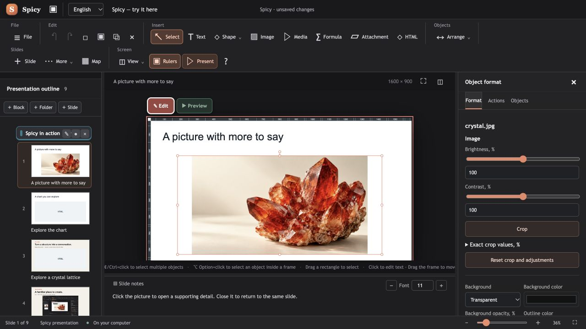

Details on demand
Put supporting images and explanations behind a click. Open them when the audience asks.
PRESENTATIONS YOU CAN EXPLORE
Send a link. No installation needed to view.
Your audience opens the presentation in a modern browser — on a computer, tablet or phone.
Try it belowInspired by reveal.js, Slides.com, Genially and PowerPoint.
01Meet Spicy. Start with the title, then move to the crystal slide.
02Go deeper. Turn the crystal → open the lattice → a detail → live Wikipedia.
03Explore the chart. On the next slide, switch views, move the slider and try Animate.
No download or installation needed to try this demo. Chart values and crystal images are illustrative; the 3D model shows an idealized NaCl lattice.
Keep going for the real editor, presenter mode, custom plugins, the ChatGPT workflow and viewing on other devices.
Created with an OpenAI GPT model and the SPICY Slides plugin.
On a phone, open the demo in a new tab and turn the phone sideways for a larger view.
The live Wikipedia layer needs an internet connection. Other websites can be embedded when they allow it.
ONE STORY. MORE TO DISCOVER.
Put supporting images and explanations behind a click. Open them when the audience asks.
Bring a chart or interactive HTML element into the slide. Change the view as you explain.
Close the detail and return to the same slide. The main story is still there.
THE ACTUAL EDITOR
Choose a slide. Add your content.
Create and present in your Chromium browser.

BuildAdd text, pictures and attachments.
TryPreview your clicks and interactions.
ShareExport an interactive HTML presentation.
Control the slides, read speaker notes and track your time in a dedicated presenter view.
Create custom HTML widgets: interactive charts, 3D models, calculators and mini demos for your slides.
The SPICY Slides plugin helps create editable presentation drafts. Separate plugin setup is required.
DOWNLOAD SPICY SLIDES
Windows x64 and macOS 13+ (Apple Silicon and Intel). Requires a Chromium browser. Free to use under the SPICY SLIDES Proprietary License. The separate CIF Viewer plugin is also available on GitHub Releases. A Linux installer is not available yet. The macOS app is not Apple-notarized.